| 編號 | 模樣 | 名稱 | 專長 | 主技能 | 樹果模樣 | 樹果 |
|---|---|---|---|---|---|---|
| 001 |  | 妙蛙種子 | 食 材 | 食材獲取S |  | 金枕果 |
| 002 |  | 妙蛙草 | 食 材 | 食材獲取S | | 金枕果 |
| 003 |  | 妙蛙花 | 食 材 | 食材獲取S | | 金枕果 |
| 004 |  | 小火龍 | 食 材 | 食材獲取S |  | 蘋野果 |
| 005 | 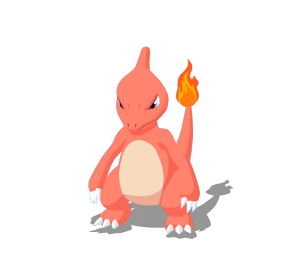 | 火恐龍 | 食 材 | 食材獲取S | | 蘋野果 |
| 006 | 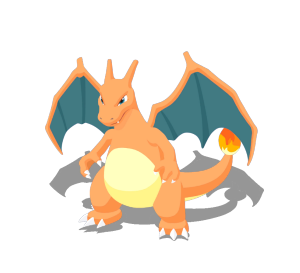 | 噴火龍 | 食 材 | 食材獲取S | | 蘋野果 |
| 007 | 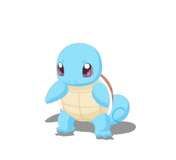 | 傑尼龜 | 食 材 | 食材獲取S |  | 橙橙果 |
| 008 |  | 卡咪龜 | 食 材 | 食材獲取S | | 橙橙果 |
| 009 |  | 水箭龜 | 食 材 | 食材獲取S | | 橙橙果 |
| 010 |  | 綠毛蟲 | 樹 果 | 食材獲取S |  | 木子果 |
| 011 | 鐵甲蛹 | 樹 果 | 食材獲取S | | 木子果 | |
| 012 | 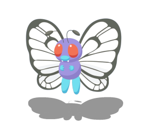 | 巴大蝶 | 樹 果 | 食材獲取S | | 木子果 |
| 019 | 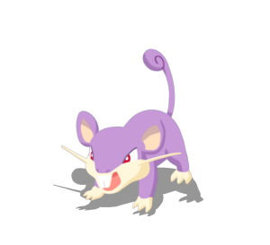 | 小拉達 | 樹 果 | 活力填充S |  | 柿仔果 |
| 020 |  | 拉達 | 樹 果 | 活力填充S | | 柿仔果 |
| 023 |  | 阿柏蛇 | 樹 果 | 活力填充S |  | 零餘果 |
| 024 | 阿柏怪 | 樹 果 | 活力填充S | | 零餘果 | |
| 025 | 皮卡丘 | 樹 果 | 能量填充S1 |  | 萄葡果 | |
| 025 |  | 皮卡丘（萬聖節） | 樹 果 | 能量填充S2 | | 萄葡果 |
| 025 |  | 皮卡丘（佳節） | 樹 果 | 夢之碎片獲取S1 | | 萄葡果 |
| 026 |  | 雷丘 | 樹 果 | 能量填充S1 | | 萄葡果 |
| 035 |  | 皮皮 | 樹 果 | 指揮 |  | 桃桃果 |
| 036 |  | 皮可西 | 樹 果 | 指揮 | | 桃桃果 |
| 039 | 胖丁 | 技 能 | 活力全體療癒S | | 桃桃果 | |
| 040 | 胖可丁 | 技 能 | 活力全體療癒S | | 桃桃果 | |
| 050 |  | 地鼠 | 食 材 | 能量填充S1 | 勿花果 | |
| 051 |  | 三地鼠 | 食 材 | 能量填充S1 | 勿花果 | |
| 052 |  | 喵喵 | 技 能 | 夢之碎片獲取S1 | | 柿仔果 |
| 053 |  | 貓老大 | 技 能 | 夢之碎片獲取S1 | | 柿仔果 |
| 054 |  | 可達鴨 | 技 能 | 能量填充S2 | | 橙橙果 |
| 055 |  | 哥達鴨 | 技 能 | 能量填充S2 | | 橙橙果 |
| 056 | 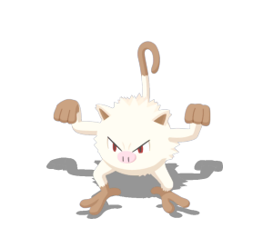 | 猴怪 | 樹 果 | 能量填充S2 | 櫻子果 | |
| 057 | 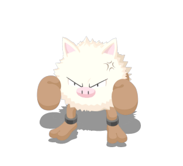 | 火爆猴 | 樹 果 | 能量填充S2 | 櫻子果 | |
| 058 |  | 卡蒂狗 | 技 能 | 幫手支援S | | 蘋野果 |
| 059 | 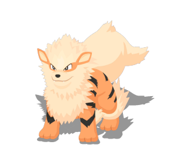 | 風速狗 | 技 能 | 幫手支援S | | 蘋野果 |
| 069 |  | 喇叭芽 | 食 材 | 活力填充S | | 金枕果 |
| 070 | 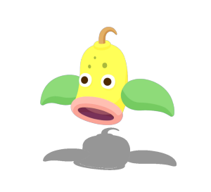 | 口呆花 | 食 材 | 活力填充S | | 金枕果 |
| 071 | 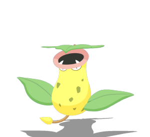 | 大食花 | 食 材 | 活力填充S | | 金枕果 |
| 074 | 小拳石 | 食 材 | 能量填充S2 |  | 文柚果 | |
| 075 |  | 隆隆石 | 食 材 | 能量填充S2 | | 文柚果 |
| 076 | 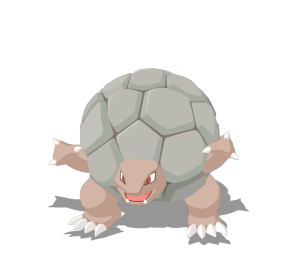 | 隆隆岩 | 食 材 | 能量填充S2 | | 文柚果 |
| 079 |  | 呆呆獸 | 技 能 | 活力療癒S | | 橙橙果 |
| 080 |  | 呆殼獸 | 技 能 | 活力療癒S | | 橙橙果 |
| 081 |  | 小磁怪 | 技 能 | 料理強化S |  | 靛莓果 |
| 082 | 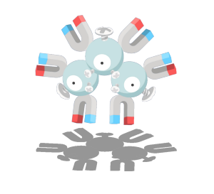 | 三合一磁怪 | 技 能 | 料理強化S | | 靛莓果 |
| 084 | 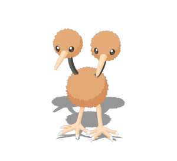 | 嘟嘟 | 樹 果 | 活力填充S |  | 椰木果 |
| 085 |  | 嘟嘟利 | 樹 果 | 活力填充S | | 椰木果 |
| 092 |  | 鬼斯 | 食 材 | 能量填充S2 |  | 墨莓果 |
| 093 | 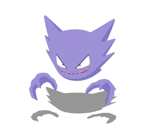 | 鬼斯通 | 食 材 | 能量填充S2 | | 墨莓果 |
| 094 | 耿鬼 | 食 材 | 能量填充S2 | | 墨莓果 | |
| 095 | 大岩蛇 | 樹 果 | 食材獲取S | | 文柚果 | |
| 104 | 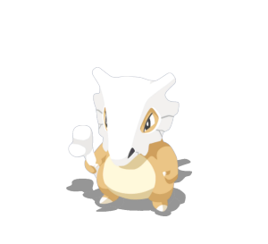 | 卡拉卡拉 | 樹 果 | 活力填充S | 勿花果 | |
| 105 | 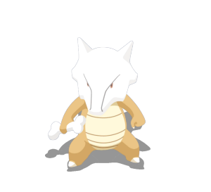 | 嘎啦嘎啦 | 樹 果 | 活力填充S | 勿花果 | |
| 115 | 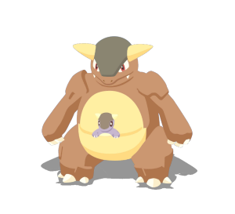 | 袋獸 | 食 材 | 食材獲取S | | 柿仔果 |
| 122 |  | 魔牆人偶 | 食 材 | 能量填充S1 |  | 芒芒果 |
| 127 |  | 凱羅斯 | 食 材 | 能量填充S1 | | 木子果 |
| 132 |  | 百變怪 | 食 材 | 能量填充S2 | | 柿仔果 |
| 133 |  | 伊布 | 技 能 | 食材獲取S | | 柿仔果 |
| 134 | 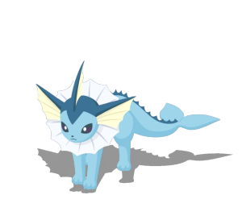 | 水伊布 | 技 能 | 食材獲取S | | 橙橙果 |
| 135 |  | 雷伊布 | 技 能 | 幫手支援S | | 萄葡果 |
| 136 |  | 火伊布 | 技 能 | 料理強化S | | 蘋野果 |
| 152 | 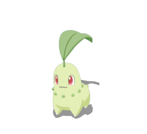 | 菊草葉 | 樹 果 | 能量填充S2 | | 金枕果 |
| 153 | 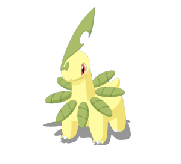 | 月桂葉 | 樹 果 | 能量填充S2 | | 金枕果 |
| 154 | 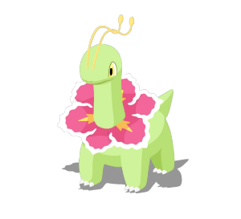 | 大竺葵 | 樹 果 | 能量填充S2 | | 金枕果 |
| 155 | 火球鼠 | 樹 果 | 能量填充S2 | | 蘋野果 | |
| 156 | 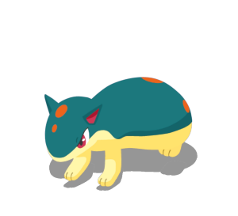 | 火岩鼠 | 樹 果 | 能量填充S2 | | 蘋野果 |
| 157 | 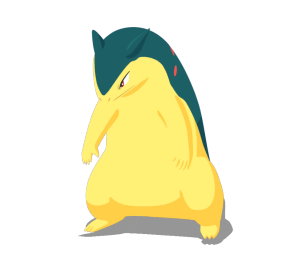 | 火爆獸 | 樹 果 | 能量填充S2 | | 蘋野果 |
| 158 |  | 小鋸鱷 | 樹 果 | 能量填充S2 | | 橙橙果 |
| 159 | 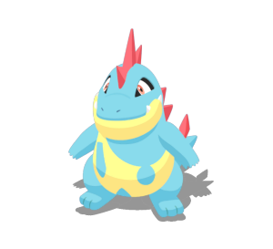 | 藍鱷 | 樹 果 | 能量填充S2 | | 橙橙果 |
| 160 | 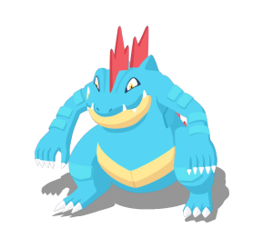 | 大力鱷 | 樹 果 | 能量填充S2 | | 橙橙果 |
| 172 | 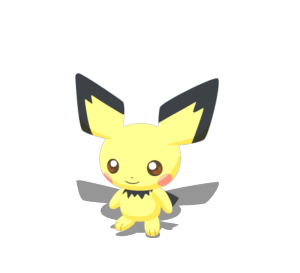 | 皮丘 | 樹 果 | 能量填充S1 | | 萄葡果 |
| 173 |  | 皮寶寶 | 樹 果 | 指揮 | | 桃桃果 |
| 174 |  | 寶寶丁 | 技 能 | 活力全體療癒S | | 桃桃果 |
| 175 | 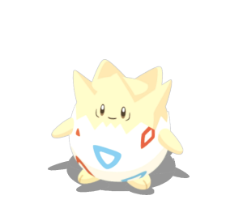 | 波克比 | 技 能 | 指揮 | | 桃桃果 |
| 176 |  | 波克基古 | 技 能 | 指揮 | | 桃桃果 |
| 179 | 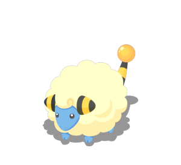 | 咩利羊 | 技 能 | 能量填充M | | 萄葡果 |
| 180 | 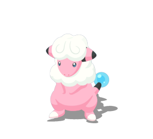 | 茸茸羊 | 技 能 | 能量填充M | | 萄葡果 |
| 181 | 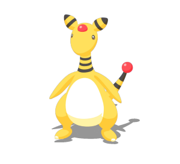 | 電龍 | 技 能 | 能量填充M | | 萄葡果 |
| 185 |  | 樹才怪 | 技 能 | 能量填充M | | 文柚果 |
| 196 |  | 太陽伊布 | 技 能 | 能量填充M | | 芒芒果 |
| 197 |  | 月亮伊布 | 技 能 | 活力填充S |  | 異奇果 |
| 199 |  | 呆呆王 | 技 能 | 活力療癒S | | 橙橙果 |
| 202 |  | 果然翁 | 技 能 | 活力療癒S | | 芒芒果 |
| 208 |  | 大鋼蛇 | 樹 果 | 食材獲取S | | 靛莓果 |
| 214 | 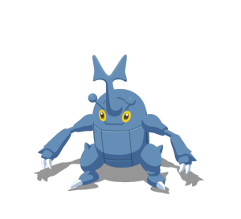 | 赫拉克羅斯 | 技 能 | 食材獲取S | | 木子果 |
| 225 |  | 信使鳥 | 食 材 | 食材獲取S | | 椰木果 |
| 228 | 戴魯比 | 樹 果 | 能量填充S1 | | 異奇果 | |
| 229 |  | 黑魯加 | 樹 果 | 能量填充S1 | | 異奇果 |
| 246 |  | 幼基拉斯 | 食 材 | 活力填充S | | 文柚果 |
| 247 | 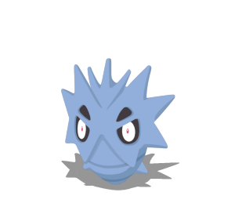 | 沙基拉斯 | 食 材 | 活力填充S | | 文柚果 |
| 248 | 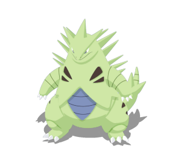 | 班基拉斯 | 食 材 | 活力填充S | | 異奇果 |
| 287 |  | 懶人獺 | 樹 果 | 食材獲取S | | 柿仔果 |
| 288 |  | 過動猿 | 樹 果 | 食材獲取S | | 柿仔果 |
| 289 |  | 請假王 | 樹 果 | 食材獲取S | | 柿仔果 |
| 302 | 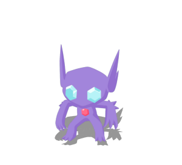 | 勾魂眼 | 食 材 | 夢之碎片獲取S2 | | 異奇果 |
| 316 |  | 溶食獸 | 技 能 | 夢之碎片獲取S2 | | 零餘果 |
| 317 | 吞食獸 | 技 能 | 夢之碎片獲取S2 | | 零餘果 | |
| 333 | 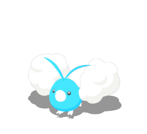 | 青綿鳥 | 樹 果 | 活力填充S | | 椰木果 |
| 334 |  | 七夕青鳥 | 樹 果 | 活力填充S |  | 番荔果 |
| 353 |  | 怨影娃娃 | 樹 果 | 能量填充S2 | | 墨莓果 |
| 354 | 詛咒娃娃 | 樹 果 | 能量填充S2 | | 墨莓果 | |
| 359 |  | 阿勃梭魯 | 食 材 | 能量填充S1 | | 異奇果 |
| 360 |  | 小果然 | 技 能 | 活力療癒S | | 芒芒果 |
| 363 | 海豹球 | 樹 果 | 食材獲取S |  | 莓莓果 | |
| 364 | 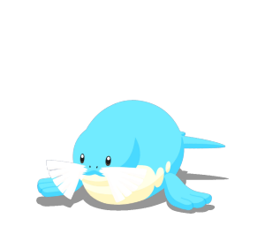 | 海魔獅 | 樹 果 | 食材獲取S | | 莓莓果 |
| 365 | 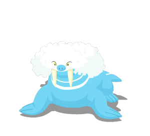 | 帝牙海獅 | 樹 果 | 食材獲取S | | 莓莓果 |
| 438 | 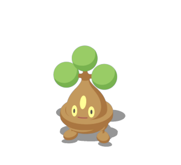 | 盆才怪 | 食 材 | 能量填充M | | 文柚果 |
| 439 | 魔尼尼 | 食 材 | 能量填充S1 | | 芒芒果 | |
| 447 | 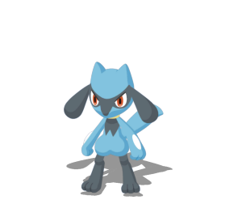 | 利歐路 | 技 能 | 夢之碎片獲取S1 | 櫻子果 | |
| 448 |  | 路卡利歐 | 技 能 | 夢之碎片獲取S1 | 櫻子果 | |
| 453 | 不良蛙 | 食 材 | 能量填充S1 | | 零餘果 | |
| 454 |  | 毒骷蛙 | 食 材 | 能量填充S1 | | 零餘果 |
| 459 | 雪笠怪 | 食 材 | 能量填充S2 | | 莓莓果 | |
| 460 | 暴雪王 | 食 材 | 能量填充S2 | | 莓莓果 | |
| 462 | 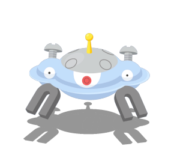 | 自爆磁怪 | 技 能 | 料理強化S | | 靛莓果 |
| 468 | 波克基斯 | 技 能 | 指揮 | | 桃桃果 | |
| 470 | 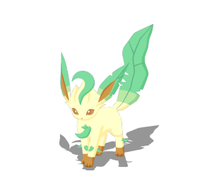 | 葉伊布 | 技 能 | 活力療癒S | | 金枕果 |
| 471 |  | 冰伊布 | 技 能 | 料理強化S | | 莓莓果 |
| 700 |  | 仙子伊布 | 技 能 | 活力全體療癒S | | 桃桃果 |